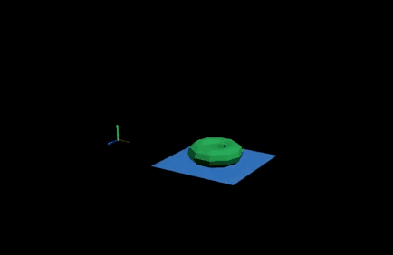

本主题介绍如何控制接近度包裹驱动者的位置影响 proximityWrap 的 inputGeometry 的变形的方式。
- 驱动者几何体变形
- 驱动者变换

在上面的示例中，蓝色平面是驱动者，影响绿色圆环。蓝色平面的顶点由变形变形器和簇变形器变形。
变形变形器会在平面中创建弯曲，但不会缩放或旋转它。簇变形器通过移动顶点在视觉上“缩放”几何体，但请注意，驱动者不知道这实际上表示缩放。驱动者的变换添加了另一个级别的缩放和转换。
当仅使用移动的顶点时，圆环似乎变平了
当驱动者仅使用移动的顶点时，圆环看起来会变得扁平，因为它随平面拉伸，但会保持其原始高度。这是因为“接近度包裹”(Proximity Wrap)不使用任何实际变换信息，仅使用移动的驱动者顶点。
如果希望驱动者将“变换”(Transform)考虑在内，请在属性编辑器(Attribute Editor)“接近度包裹”(Proximity Wrap)设置的“驱动者”(Driver)区域中取消激活“使用变换作为变形”(Use Transform As Deformation)选项。（请参见接近度包裹选项(Proximity Wrap options)中的“驱动者属性”(Driver Attributes)。）
禁用“使用变换作为变形”(Use Transform As Deformation)后，圆环会随驱动者一起缩放，而不会随簇变形器进行缩放
- 方法 1
-
第一种方法包括提供隐含变换的矩阵。在节点编辑器(Node Editor)中，将簇控制柄“世界矩阵”(World Matrix)属性连接到“接近度包裹”(Proximity Wrap)的“驱动者簇矩阵”(Driver Cluster Matrix)属性，以提供有关隐含变换的信息。注： 可以将矩阵连接到属性，以提供要从其开始移动的位置。“驱动者簇静止矩阵”(Driver Cluster Rest Matrix)属性提供静止变换，“驱动者簇矩阵”(Driver Cluster Matrix)提供当前变换。它们之间的相对运动将用作 proximityWrap 的隐含变换。
- 方法 2
-
第二种方法包括提供简单的均匀缩放值。如果驱动者的隐含缩放为 2.5，则可以在 proximityWrap 变形器上使用“缩放补偿”(Scale Compensation)属性设置此值。这可以在 proximityWrap 变形器的全局级别上设置，以便它应用于所有驱动者，或者可以分别为每个驱动者设置它。
左：仅使用移动的顶点，右：使用所有变换。